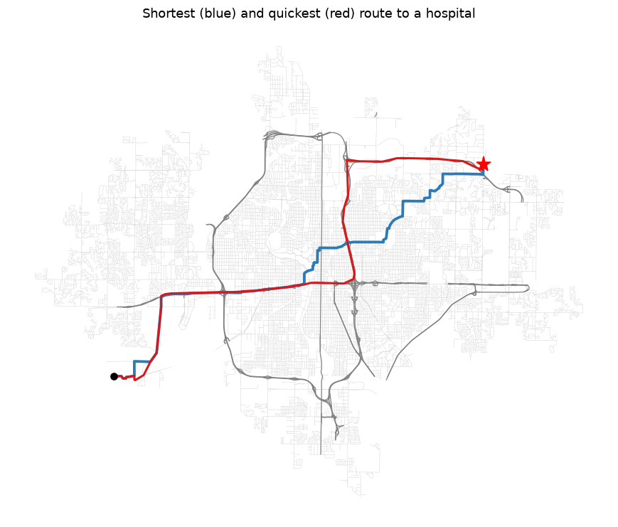
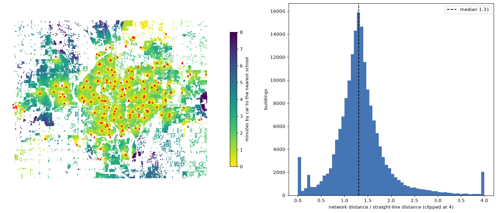
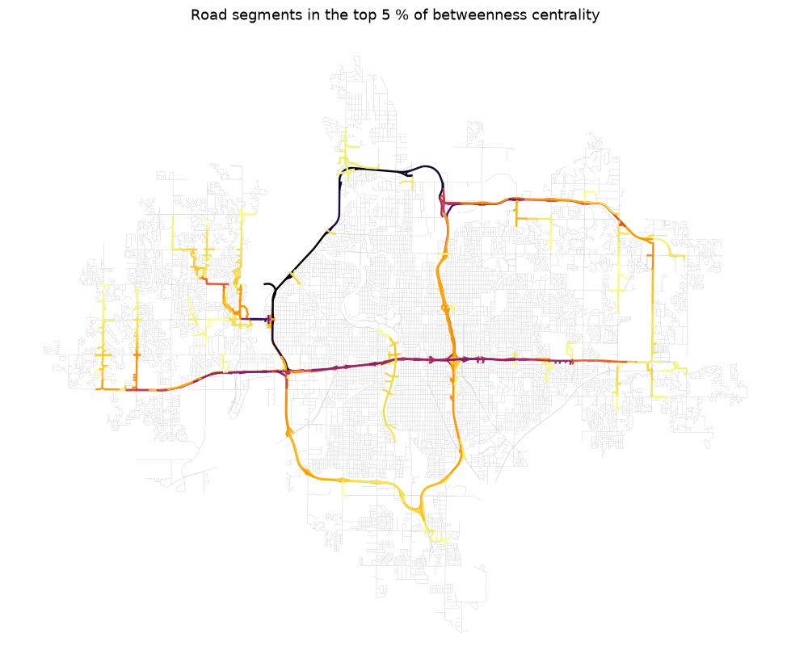

Shortest Paths, Centrality and Accessibility on Large Road Networks
Straight-line distance is a poor guide to how far people actually travel: rivers, railways and the shape of a street grid force detours. Network analysis measures distances along roads, finds the routes through which most trips pass, and reveals parts of a network that cannot reach each other. These problems are graph problems, and some of them (betweenness centrality in particular) grow much faster than the size of the network. This notebook builds a graph of the 22,813 road segments of Wichita, Kansas, with geolattice.distributed.network, computes travel times from every building to the nearest school, finds the busiest junctions with betweenness centrality on the CPU (SciPy, NetworkX) and the GPU (cuGraph), and shows when GeoLattice deliberately falls back to the CPU.
Overview
From lines to a graph
A road network is a graph: nodes are junctions and dead ends, edges are the road segments between them, each with a weight (length, or travel time). Turning lines into a graph needs the lines to be noded: two roads are connected only where they share an end point. OSMnx delivers noded, simplified networks; raw line data (a shapefile of roads) often needs noding and snapping of end points that almost meet.
The costs of the common questions
Question
Algorithm
Cost for n nodes and m edges
Shortest path from one source
Dijkstra
about m log n
Distances from many sources (accessibility)
multi-source Dijkstra, or one Dijkstra per source
sources x m log n
Connected parts of the network
breadth-first search
n + m
PageRank
power iteration
iterations x m
Betweenness centrality
Brandes: shortest paths from every node
n x m, quadratic and more
Betweenness counts, for each node, the share of all shortest paths that pass through it: the junctions and bridges that carry through traffic. Exact betweenness of a 16,000 node network needs 16,000 shortest-path trees. Sampling k source nodes gives an unbiased approximation at k / n of the cost.
Graphs on GPUs
cuGraph runs breadth-first search, single-source shortest paths, PageRank and betweenness on the GPU. Road networks are a hard case for GPUs: they are sparse, nearly planar and have long shortest paths, so each step of a search touches few nodes and the GPU’s thousands of cores have little to do at once. GPUs shine on large graphs with short paths (social and web graphs). A second limit is numerical: Brandes’ algorithm counts the shortest paths between nodes, and on grid-like networks those counts grow exponentially with distance; cuGraph stores them as 64-bit integers, which overflow on large lattices.
the 180,000 buildings inside the road network’s extent
Contents
Setup
A graph from road lines
Travel time weights and one route
Accessibility: travel time to the nearest school
Connected components and what they reveal
Betweenness centrality on CPU and GPU
When the GPU is not used
Summary and exercises
Setup
Code
import warnings # warning controlwarnings.filterwarnings("ignore") # hide routine library warningsimport os # environment and CPU countimport time # wall-clock timingfrom pathlib import Path # file pathsimport matplotlib.pyplot as plt # figuresimport numpy as np # arraysimport pandas as pd # tablesimport geopandas as gpd # vector dataimport xarray as xr # labelled rastersimport geolattice # GeoLatticeimport geolattice.distributed as pdist # distributed and GPU spatial computingimport dist_data as dd # chapter helper: paths, cached downloads, timersplt.rcParams.update({"figure.dpi": 110}) # figure resolutionpd.set_option("display.width", 140) # wider printed tablesOUT = Path("outputs") # results and scratch files written by this chapterOUT.mkdir(exist_ok=True) # create it if neededcaps = pdist.capabilities() # engines and GPUs on this machineprint("GeoLattice", geolattice.__version__, "|", os.cpu_count(), "CPU cores |", caps["gpus"], "GPU(s)", # versionsf"({caps.get('gpu_memory_total', 0) /1e9:.0f} GB)"if caps["gpus"] else"") # GPU memoryimport warnings as _w # to show one library warning on purposeimport shapely # geometry helpersdef sync(): # wait for queued GPU work so timings are realif caps["gpus"]: # only with a GPUimport cupy as cp # GPU arrays cp.cuda.Device().synchronize() # block until donedef timed(fn): # wall time and result of one call t = time.perf_counter(); out = fn(); sync();return time.perf_counter() - t, out # time it
Most nodes are three- and four-way junctions; nodes of degree 1 are dead ends (cul-de-sacs, the edge of the city limits). OSMnx removes most nodes of degree 2 (mere bends); the few hundred left mark places where a road’s attributes, such as its name or class, change.
Travel time weights and one route
Length is not what drivers minimize. Each segment gets a speed from its OSM maxspeed tag, or a typical speed for its road class when the tag is missing, and its travel time in minutes becomes the edge weight.
Code
default_kmh = {"motorway": 105, "motorway_link": 60, "trunk": 90, "primary": 70, "secondary": 60, # typical speeds by class"tertiary": 50, "unclassified": 45, "residential": 40, "living_street": 20} # km/hfirst =lambda h: h.strip("[]").replace("'", "").split(",")[0].strip() # first class of multi-class segmentsmph = pd.to_numeric(roads.maxspeed.str.extract(r"(\d+)")[0], errors="coerce") # posted speed in mphroads["kmh"] = (mph *1.609).fillna(roads.highway.map(first).map(default_kmh)).fillna(40) # km/hroads["minutes"] = roads.length /1000/ roads.kmh *60# travel time per segmentgt = pdist.network.graph_from_lines(roads, weight="minutes") # same nodes, time weightsprint(f"posted speed on {mph.notna().mean():.0%} of segments; total driving time over all roads {roads.minutes.sum() /60:.0f} h") # coverage
posted speed on 8% of segments; total driving time over all roads 76 h
Code
fac = dd.wichita_facilities() # schools and hospitalshosp = fac[fac.amenity =="hospital"].reset_index(drop=True) # 12 hospitalsnodes = gt.nodes_gdf() # nodes as pointssrc =int(pdist.network.nearest_nodes(gt, gpd.GeoDataFrame(geometry=[shapely.Point(nodes.total_bounds[[0, 1]] +3000)], crs=5070))[0]) # a node near the south-west cornerdst =int(pdist.network.nearest_nodes(gt, hosp.iloc[[0]])[0]) # the node nearest the first hospitalfast = pdist.network.shortest_path(gt, src, dst, compute="cpu") # quickest routeshort = pdist.network.shortest_path(g, src, dst, compute="cpu") # shortest routecrow =float(np.hypot(*(gt.xy[src] - gt.xy[dst]))) # straight lineprint(f"quickest: {fast['cost']:.1f} min over {shapely.length(fast['geometry']) /1000:.1f} km | shortest: {short['cost'] /1000:.1f} km | straight line {crow /1000:.1f} km") # compareif caps["gpus"]: # same route on the GPU gpu = pdist.network.shortest_path(gt, src, dst, compute="gpu") # cuGraph SSSPprint(f"cuGraph: {gpu['cost']:.1f} min, same nodes: {gpu['nodes'] == fast['nodes']}") # checkfig, ax = plt.subplots(figsize=(8, 8)) # one maproads.plot(ax=ax, color="lightgrey", lw=0.3) # all roadsroads[roads.highway.str.contains("motorway|primary")].plot(ax=ax, color="grey", lw=0.8) # main roadsgpd.GeoSeries([short["geometry"], fast["geometry"]], crs=5070).plot(ax=ax, color=["#2c7bb6", "#d7191c"], lw=[2.5, 2]) # routesax.plot(*gt.xy[src], "ko"); ax.plot(*gt.xy[dst], "r*", ms=14) # endsax.set_title("Shortest (blue) and quickest (red) route to a hospital"); ax.set_axis_off(); plt.tight_layout(); plt.show() # draw
quickest: 27.2 min over 34.5 km | shortest: 32.6 km | straight line 25.3 km
cuGraph: 27.2 min, same nodes: True

The quickest route is longer than the shortest one but uses faster roads. Both are much longer than the straight line, which is the point of network analysis.
Accessibility: travel time to the nearest school
For every building in the network’s extent: snap it to the nearest node, then find the travel time from that node to the nearest school. One multi-source Dijkstra from all school nodes answers the second step for every node at once; shortest_path_lengths returns the time from each school to every node, and the minimum over schools is the time to the nearest one.
Code
schools = fac[fac.amenity =="school"].reset_index(drop=True) # 171 schoolsbld = pdist.vector.to_crs(pdist.read_vector(dd.BUILDINGS, bbox=tuple(gpd.GeoSeries(shapely.box(*roads.total_bounds), crs=5070).to_crs(4326).total_bounds)), 5070) # buildings in the extentbld = bld.set_geometry(bld.geometry.representative_point()) # one point per buildingbld = bld[bld.within(shapely.box(*roads.total_bounds))].reset_index(drop=True) # inside the road extentschool_nodes = np.unique(pdist.network.nearest_nodes(gt, schools)) # school locations on the grapht = {} # timingst["nearest node of every building"], bnode = timed(lambda: pdist.network.nearest_nodes(gt, bld)) # snap buildingst["Dijkstra from all schools, CPU"], d_cpu = timed(lambda: pdist.network.shortest_path_lengths(gt, school_nodes, compute="cpu")) # SciPyif caps["gpus"]: # cuGraph, one SSSP per school t["SSSP from each school, GPU"], d_gpu = timed(lambda: pdist.network.shortest_path_lengths(gt, school_nodes, compute="gpu")) # cuGraphprint("GPU equals CPU:", bool(np.allclose(np.where(np.isinf(d_cpu), -1, d_cpu), np.where(np.isinf(d_gpu), -1, d_gpu), atol=1e-6))) # checkbld["minutes"] = d_cpu.min(axis=0)[bnode] # travel time to the nearest schoolcrow = pdist.vector.knn(bld, schools, k=1).distance.values # straight-line distance to the nearest schoolroad_m = pdist.network.shortest_path_lengths(g, school_nodes, compute="cpu").min(axis=0) # metres by road to the nearest schoolbld["detour"] = road_m[bnode] / np.maximum(crow, 50) # network / straight-line distance (at least 50 m)print(f"{len(bld):,} buildings, {len(school_nodes)} school nodes") # sizesprint(pd.Series(t, name="seconds").round(3).to_string()) # timingsprint(bld[["minutes", "detour"]].describe(percentiles=[0.5, 0.9, 0.99]).round(2).to_string()) # distributions
GPU equals CPU: True
181,860 buildings, 153 school nodes
nearest node of every building 0.131
Dijkstra from all schools, CPU 0.265
SSSP from each school, GPU 12.611
minutes detour
count 181860.00 181860.00
mean 1.88 1.37
std 1.58 0.71
min 0.00 0.00
50% 1.33 1.31
90% 4.30 1.96
99% 7.39 4.07
max 8.93 51.34
Code
fig, ax = plt.subplots(1, 2, figsize=(15, 6.5), gridspec_kw={"width_ratios": [1.3, 1]}) # map and histogramsc = ax[0].scatter(bld.geometry.x, bld.geometry.y, c=bld.minutes, s=0.2, cmap="viridis_r", vmax=8) # buildings by travel timeschools.plot(ax=ax[0], color="r", marker="^", markersize=10) # schoolsplt.colorbar(sc, ax=ax[0], shrink=0.7, label="minutes by car to the nearest school"); ax[0].set_aspect("equal"); ax[0].set_axis_off() # labelsax[1].hist(bld.detour.clip(upper=4), bins=60, color="#4575b4") # detour factorax[1].axvline(bld.detour.median(), color="k", ls="--", label=f"median {bld.detour.median():.2f}") # medianax[1].set_xlabel("network distance / straight-line distance (clipped at 4)"); ax[1].set_ylabel("buildings"); ax[1].legend() # labelsplt.tight_layout(); plt.show() # draw

Most buildings are within a few minutes’ drive of a school; the longest times are at the rural edges of the network. Network distance exceeded the straight line by about a third for the median building and by much more where rivers, railways and highways force detours. (The small spike at zero is buildings that snap to the same road node as a school, so their network distance is zero while the straight line is not.) On the CPU, SciPy’s multi-source Dijkstra handled all schools in one call; cuGraph ran one search per school, and on a road network of this size the GPU searches were slower, for the reasons given in the Overview. Both gave identical travel times. While this notebook was written they did not: the network contains 270 pairs of parallel segments (two roads joining the same two junctions), and cuGraph kept an arbitrary one of each pair where SciPy keeps the quicker, so some GPU travel times were up to 0.3 % too long. GeoLattice now passes only the quickest of parallel edges to cuGraph.
Connected components and what they reveal
The OSMnx network is one connected component. Components become informative when something is removed: here, all motorway segments and their ramps, as if the freeways were closed.
Code
keep =~roads.highway.str.contains("motorway") # drop motorways and their linksg_closed = pdist.network.graph_from_lines(roads[keep]) # graph without themlab = pdist.network.components(g_closed, compute="gpu"if caps["gpus"] else"cpu") # component per nodesizes = np.bincount(lab) # nodes per componentprint(f"{g_closed.n_nodes:,} nodes in {len(sizes)} components; largest {sizes.max():,} nodes; "# summaryf"{(sizes <10).sum()} components with fewer than 10 nodes") # fragmentsprint("same labels on CPU:", bool((pd.factorize(pdist.network.components(g_closed, compute="cpu"))[0] == pd.factorize(lab)[0]).all())) # check
15,729 nodes in 2 components; largest 15,727 nodes; 1 components with fewer than 10 nodes
same labels on CPU: True
The network barely changed: without the freeways it still holds together, apart from one two-node fragment that was reachable only by a ramp. Wichita’s street grid offers an alternative to every freeway, which is itself a useful finding about the network’s redundancy. Running components on a raw network in the same way finds digitizing errors (roads that should meet but do not) before they distort an accessibility analysis.
Betweenness centrality on CPU and GPU
Exact betweenness of 16,000 nodes needs a shortest-path tree from every node. NetworkX does it in pure Python, so the comparison uses a sample of k source nodes (the approximation is unbiased and its error shrinks with k); cuGraph also computes the exact version.
rank correlation with exact: CPU k=500 0.97 | GPU k=500 0.973
CPU (NetworkX), k = 500 16.09
GPU (cuGraph), k = 500 0.28
GPU (cuGraph), exact 3.60
Code
best = b_exact if caps["gpus"] else b_cpu # the best available estimatee = roads.copy() # edgese["btw"] = np.maximum(best.values[g.src], best.values[g.dst]) # edge score from its end nodesfig, ax = plt.subplots(figsize=(9, 9)) # one mape.plot(ax=ax, color="lightgrey", lw=0.3) # all roadstop = e[e.btw > e.btw.quantile(0.95)] # the top 5 %top.plot(ax=ax, column="btw", cmap="inferno_r", lw=1.6) # coloured by betweennessax.set_title("Road segments in the top 5 % of betweenness centrality"); ax.set_axis_off(); plt.tight_layout(); plt.show() # draw

On this network the GPU computed the exact betweenness about four times faster than NetworkX computed a 500-node sample, and the sampled values already rank nodes almost like the exact ones (Spearman correlation 0.97). The highest values trace the freeway loop around central Wichita, the east-west Kellogg corridor (US 54) and the arterials that feed them: the routes that most shortest paths share. (This is unweighted betweenness, counted in hops; it describes the network’s structure, not traffic volumes.)
When the GPU is not used
GeoLattice checks before sending betweenness to cuGraph. max_shortest_path_count probes how many equally short paths connect two distant nodes; above 10^18 cuGraph’s 64-bit counters could overflow and give wrong results, and GeoLattice runs the CPU version with a warning instead. A regular street lattice is the worst case: the number of shortest paths across an n x n grid grows like the binomial coefficient C(2n, n).
Code
lines = [] # a 70 x 70 lattice of 100 m streetsfor i inrange(71): # rows and columnsfor j inrange(70): # segments lines.append(shapely.LineString([(j *100, i *100), ((j +1) *100, i *100)])) # east-west segment lines.append(shapely.LineString([(i *100, j *100), (i *100, (j +1) *100)])) # north-south segmentgrid = pdist.network.graph_from_lines(gpd.GeoDataFrame(geometry=lines, crs=5070)) # the lattice graphprint(f"lattice: {grid.n_nodes:,} nodes | max shortest-path count {pdist.network.max_shortest_path_count(grid):.2e}"# overflow probef" | Wichita: {pdist.network.max_shortest_path_count(g):.2e}") # the real networkwith _w.catch_warnings(record=True) as caught: # capture the warning _w.simplefilter("always") # make sure it is recorded tb, bl = timed(lambda: pdist.network.centrality(grid, "betweenness", k=200, compute="gpu")) # asks for the GPUprint(f"{tb:.1f} s;", caught[0].message if caught else"no warning (no GPU on this machine)") # what happened
lattice: 5,041 nodes | max shortest-path count 9.38e+40 | Wichita: 1.11e+05
1.9 s; Graph has more than 1e18 equal-length shortest paths between some nodes (lattice-like network); cuGraph's int64 path counts would overflow, so betweenness runs on CPU.
The 70 x 70 lattice has about 10^40 equally short corner-to-corner paths, far beyond what a 64-bit integer holds, so the request for the GPU ran on the CPU with a warning. The Wichita network, with its irregular blocks, stays far below the limit. Silent overflow would have produced wrong centralities without any error; checking a cheap bound first is the safer design.
Summary and exercises
graph_from_lines turns noded road lines into a weighted graph; travel time weights come from posted or typical speeds.
Network distance to the nearest school was a third longer than the straight line for the median building, and much longer where barriers force detours.
A multi-source Dijkstra on the CPU answered accessibility for all 180,000 buildings at once; on a road network of this size it beat one cuGraph search per school.
Removing the freeways isolated only one two-node fragment: the street grid is redundant. Component labels find network errors and vulnerable links.
cuGraph computed exact betweenness four times faster than NetworkX computed a 500-node sample, and the sample ranked nodes almost like the exact result.
On lattice-like networks shortest-path counts overflow 64-bit integers; GeoLattice detects this and runs betweenness on the CPU.
Exercises
Compute travel time to the nearest hospital for every building. What share of buildings is more than 10 minutes away?
Compare betweenness weighted by travel time (build the NetworkX graph with g.to_networkx() and pass weight="weight") with the unweighted version. Which roads gain importance?
Remove the bridges over the Arkansas River (segments that cross it) and recompute school accessibility. Which neighbourhoods lose most?
Time exact betweenness on cuGraph for random subgraphs of 2,000, 4,000, 8,000 and 16,000 nodes and fit the growth exponent.